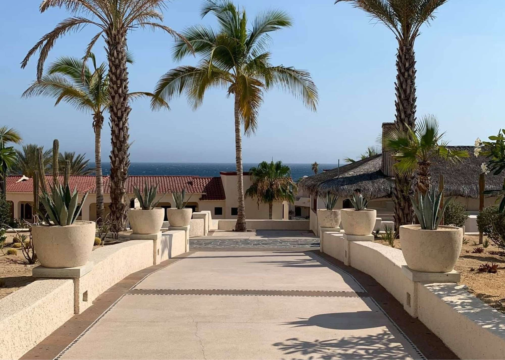

When I look back at my first international trip, I remember the excitement of getting my first passport stamp, the Pacific Ocean outside our resort, riding ATVs through the Baja desert, getting on a camel, and realizing that traveling internationally was something I definitely wanted to do more of.
But let's talk about the part every traveler eventually wants to know. How much did I actually spend?
Round Trip Flight
My United Airlines round-trip flight cost $698.31. And let me say this for the record - - I would not pay that much for a flight now, especially considering it only takes 6 -7 hours tops to get there. At the time, though, I was excited to be taking my first international trip and wasn't thinking quite as strategically about airfare as I do today. This is one of those expenses that makes looking back at old travel costs so interesting. My travel style and the way I shop for flights have definitely changed since 2019.
Airport Transfers
Our airport transportation cost $42 per person. The one thing I wish we had done is - -arrange transportation beforehand, which would have been one less thing we had to take care of upon landing and our journey through customs. When it’s your first time navigating a foreign country, prebooking transportation ahead of time is one less thing you have to figure out after landing.
All-Inclusive Stay at Solmar Resort
We booked a 5-night all-inclusive Solmar Resort package through Groupon for $920. Split between two people, we each paid $460. Since the package was for an all-inclusive resort, we didn’t have to separately budget for every meal and drink while we were there. And the location was a huge part of the experience! Waking up in Los Cabos to the Pacific Ocean right outside was the kind of scenery that made me forget, for a moment, what everyday life looked like back home.

Beachfront Cabana Massages
What’s a vacation without relaxing! We booked massages at the resort – which took place in a beachfront cabana while listening to the waves of the Pacific Ocean in the background. What a way to relax. Our massages cost around $100-150 per person.
ATV & Camel Rides
We booked an excursion through Cactus Tours in Migriño, where the Baja desert meets the Pacific. Our package included transportation to and from the resort, ATV riding through cactus-filled desert trails that ended on the coastline of the Pacific, and camel riding on the beach. Including the digital photos purchased, we spent around $300-400 for the two of us.
Medano Beach
We also made our way over to Medano Beach, one of the most popular beaches in Cabo San Lucas. One of the things I remember about this part of the trip is that it felt familiar and safe. We did what the locals do, we took a bus for a few pesos and we walked the rest of the way sightseeing. For someone experiencing international travel for the first time, those little moments mattered. I wasn't just staying inside the resort bubble. I was figuring out how to get around, seeing another side of Cabo, and experiencing the destination beyond the all-inclusive property.
Total Cost

My estimated personal trip total: $1,450–$1,550
This doesn't include an exact amount for souvenirs, local-market food, tips, or other small purchases because I don't have a complete 2019 record of those expenses. And I'm okay with that. This series isn't about pretending I remember every dollar from a trip that happened years ago. It's about giving you a realistic look at what my first international trip actually cost me and what I remember learning along the way.
This trip started with a new passport and a destination I had never visited. I was nervous about customs. I was nervous about being in another country. I was figuring out transportation, language, money, and how to navigate a place that wasn't familiar to me. But somewhere between the Pacific Ocean, the desert, the camel ride, the ATV excursion, the beach, the local markets, and that first passport stamp, something clicked. I wanted to see more. Los Cabos wasn't just a vacation. It was the trip that made me want to travel the world. And that little stamp in my passport became the beginning of a whole lot more stories.One Passport Stamped Changed Everything
Los Cabos Series
Brown Girl Abroad: The Los Cabos Trip That Sparked My Love for Travel
Los Cabos Travel Guide: What to Know, See & Do